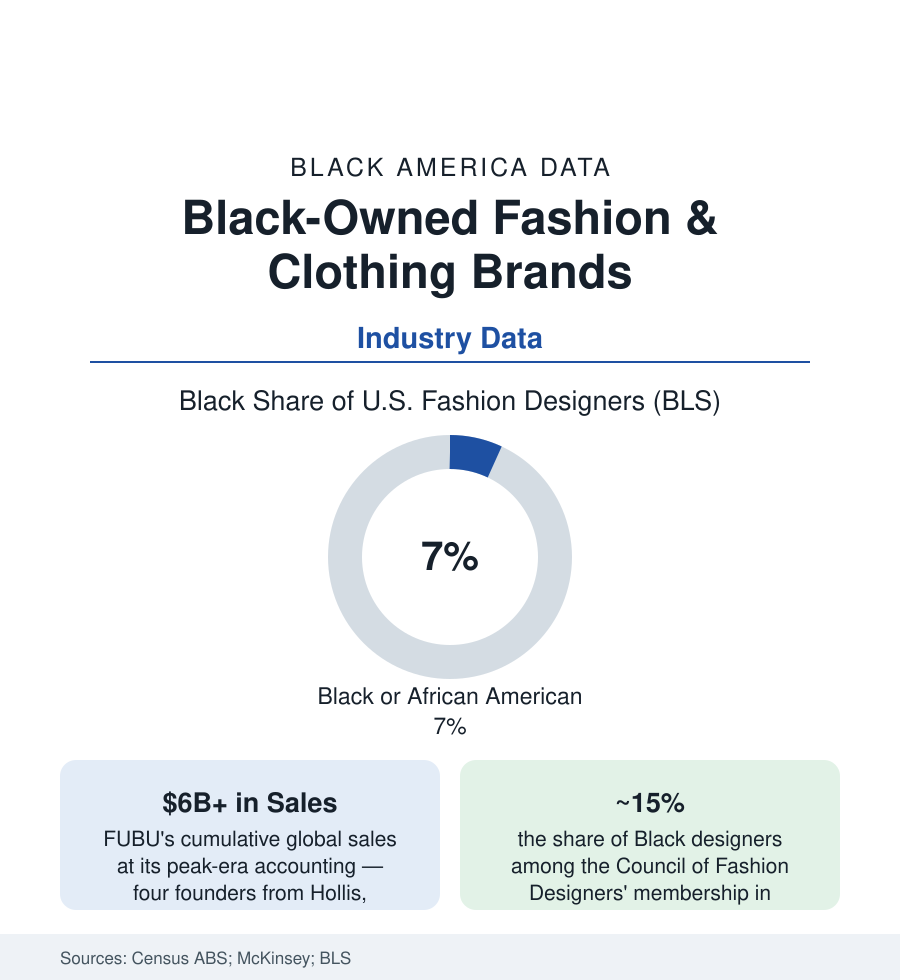

Black Business
Black-Owned Fashion Brands: From FUBU's $6 Billion to the Luxury Tier
Black designers created streetwear as a category and a multi-billion market — ownership of it is the ongoing fight. The apparel business data.

Fashion is where Black creativity's market value is least disputable and its ownership structure most contested: Black designers created the streetwear category outright (a multi-billion-dollar global market built from Queens and Harlem storefronts), defined the era's silhouettes repeatedly, and hold, in the industry's own equity audits, a fraction of the executive suites and a single-digit share of the design profession. The last decade added the luxury chapter — Black creative directors at heritage houses, Black-founded labels at the fashion weeks — and the data question unchanged: who owns the label. This article reads the apparel file.
The Streetwear Founders: The Ownership Proof
The founding business cases belong in the data: FUBU (1992, four founders from Hollis, Queens — 'For Us By Us' as a literal corporate thesis; the mortgage-funded start, the LL Cool J Gap-ad hack of the marketing record, the licensing architecture that took the brand past a reported six billion dollars in cumulative global sales while the founders kept the company), Cross Colours before it (the Los Angeles label that proved the market in the late 1980s, its educational-message branding the era's), Karl Kani, Sean John (the CFDA-winning scale case — and its later buyback chapter, the founder reacquiring the brand from the conglomerate that bought it, the ownership circle the file keeps drawing), Phat Farm and Rocawear in the licensing wave's tallies, and the cautionary ledgers inside the triumph (the distribution era's counterfeiting losses, the department-store gatekeeping the founders' memoirs document, the private-equity rollups that absorbed several era brands at valuations their founders publicly second-guessed). The category these men built now anchors the global industry — the luxury-streetwear merger (the Louis Vuitton creative directorships held by Virgil Abloh and then Pharrell Williams; the resale platforms' data showing streetwear's price gravity) is the founders' aesthetic at the industry's summit, with the equity largely elsewhere: the file's central ratio in one sentence.
The Industry Numbers: Designers, Executives, Shelves
The counts in the equity reports (McKinsey's fashion-equity series and the trade audits): Black designers at roughly seven percent of the BLS's fashion-designer workforce; Black representation in fashion's executive and creative-director tiers lower — the creative-director appointments at major houses across the recent decades countable on two hands in the press tallies (Abloh, Olivier Rousteing's long Balmain tenure, and a short roll), the C-suite audits thinner still; retail's shelf data the consumer-facing version (the beauty article's shelf-share fight replayed in apparel — the Aurora James 15 Percent Pledge of 2020 extending its shelf-space contract model from beauty into fashion retailers, its signatory audits publishing the Black-brand share of assortments). The ABS's apparel-manufacturing and clothing-retail slices price the owned tier: thousands of Black-owned clothing retailers and a smaller manufacturing base, the direct-to-consumer era's economics (the platform storefront, the drop model, the print-on-demand zero-inventory start) lowering the founding cost to the price of an audience — the social-commerce data showing Black founders' brands among its native successes, and its fee-and-algorithm dependencies the new gate in the old position.
The Luxury Tier and the New Houses
The current decade's data describe a genuine tier forming: Black-founded labels at the official fashion weeks (the New York and Paris calendars' Black-founded houses — Pyer Moss's runway-as-thesis, Telfar's ownership-pure DTC model with the 'Bushwick Birkin' as the decade's defining accessible-luxury case — a Black founder keeping full ownership, setting the price democratically, and selling out drops on community gravity alone — Wales Bonner, Sergio Hudson, LaQuan Smith, Anifa Mvuemba's Hanifa and its virtual-runway first), the prize-and-fund infrastructure (the CFDA/Vogue Fashion Fund's Black winners, Harlem's Fashion Row's brand-icing programs and its retail partnerships), and the creative-director tier's second generation. The counterweights in the same data: the fashion cycle's mortality tables (the independent label's median lifespan in the trade analyses), the wholesale channel's payment terms as the small label's cash-flow cliff, the counterfeiting and design-copying exposure (the fast-fashion copy lag measured in days in the platform era — the indie designer's screenshot-to-listing pipeline), and the acquisition gravity (the conglomerates' minority-stake programs arriving as the tier's capitalization — ownership diluted by design of the term sheet, the founders' FUBU lesson quoted in every negotiation the trade press covers).
Reading the Fashion Data
Six billion in sales from four founders who kept the company; a global category built on Black design; seven percent of the designers and the summit's creative chairs only lately opening: fashion's file is the culture industry's clearest ledger of the distance between influence and equity — and its newest houses, Telfar's ownership above all, are the data's counter-argument in progress. The label is the asset. The file's founders have always known which side of it to stand on.
More in Black Business
Black-Owned Businesses: Counts, Receipts, and the Representation Gap
About 161,000 Black-owned employer firms and three million solo ventures: how the Census Bureau counts Black business ownership, where firms concentrate, and the gap between population share and business share.
Black Median Net Worth: The Wealth Gap in Federal Reserve Data
The Federal Reserve puts Black median family net worth at $44,900, against $285,000 for White families — about 16 cents on the dollar. The widest gap in economic data.
Black Buying Power: The $1.8 Trillion Consumer Economy
Black buying power is estimated at about $1.8 trillion — larger than the economy of most nations. What the figure measures, who produces it, and what it buys.
Source: U.S. Census Bureau Annual Business Survey; McKinsey & Company State of Fashion and racial equity in fashion reports; company histories and industry press records.